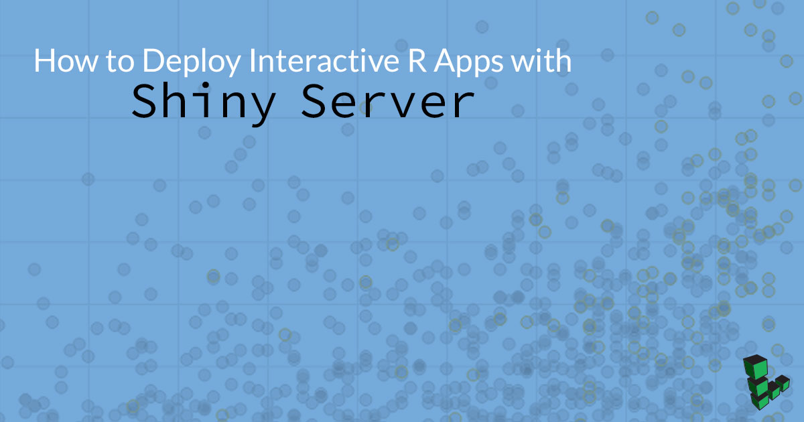
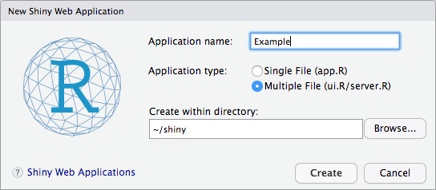
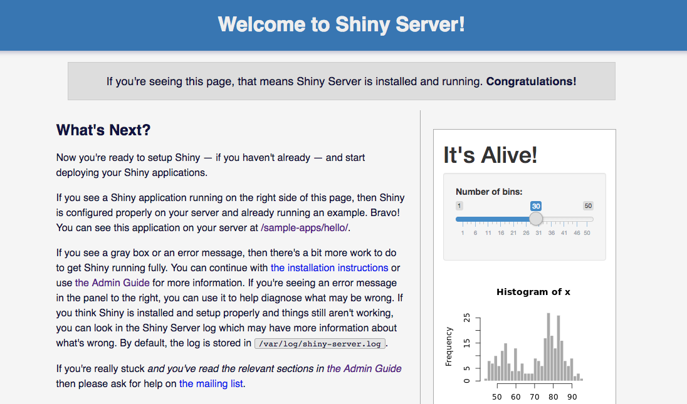
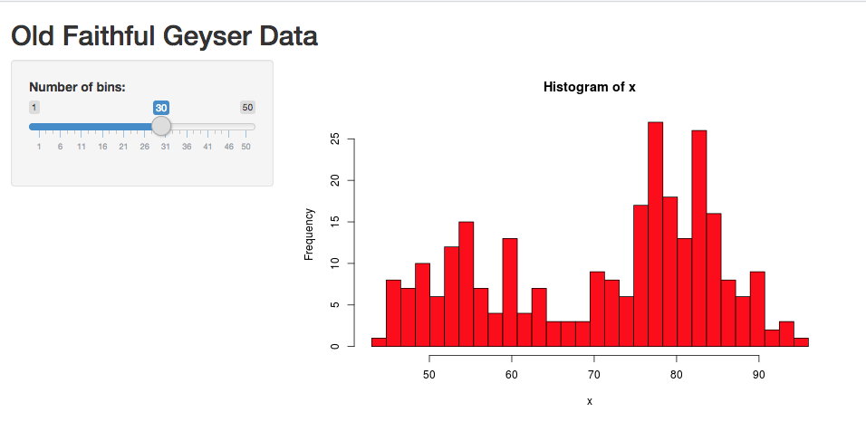

How to Deploy Interactive R Apps with Shiny Server
Updated by Linode Written by Jared Kobos

What is Shiny?
Shiny is a library for the R programming language that allows you to create interactive web apps in native R, without needing to use web technologies such as HTML, CSS, or JavaScript. There are many ways to deploy Shiny apps to the web; this guide uses Shiny Server to host an example Shiny app on a Linode.
Before You Begin
If you do not have RStudio installed on your local computer, follow our How to Deploy RStudio Using an NGINX Reverse Proxy guide to set up a remote workstation on a Linode.
Build a Shiny Test App
Shiny Server comes with pre-installed demo apps. However, in order to demonstrate the process of deploying an app, you will create an app locally and deploy it to a Shiny Server on a Linode.
Open RStudio and install the Shiny package:
install.packages('shiny')In the File menu, under New File, select Shiny Web App…. When prompted, choose a name for your project. Select Multiple File and choose a directory to store the new app’s files.

Rstudio automatically opens two new files:
ui.Randserver.R. These files are pre-filled with a demo app that will create an interactive histogram of R’s built-in Old Faithful data set. Editserver.Rto adjust the formatting of the histogram according to your tastes. For example, to change the bars to red with a black border:hist(x, breaks = bins, col = 'red', border = 'black')To test the project locally, click Run App in the upper right corner of the text editor.
Save the project and copy the files to your Linode. Replace
usernamewith your Unix account username andlinodeIPwith the public IP address or domain name of your Linode:scp -r ~/shiny/Example username@linodeIP:/home/username
Deploy a Shiny App to a Remote Server
The steps in this section should be completed on your Linode.
Install R
Open
/etc/apt/sources.listand add the following line to the end of the file:Ubuntu:
deb http://cran.rstudio.com/bin/linux/ubuntu xenial/Debian:
deb http://cran.rstudio.com/bin/linux/debian stretch-cran34/Add the key ID for the CRAN network:
sudo apt-key adv --keyserver keyserver.ubuntu.com --recv-keys E084DAB9sudo apt install dirmngr sudo apt-key adv --keyserver keys.gnupg.net --recv-key 'E19F5F87128899B192B1A2C2AD5F960A256A04AF'Update the repository:
sudo apt updateInstall the R binaries:
sudo apt install r-base
Add the Shiny Package
Use install.packages() to add the Shiny package:
sudo su - \
-c "R -e \"install.packages('shiny', repos='https://cran.rstudio.com/')\""
Install Shiny Server
Install
gdebi:sudo apt install gdebi-coreDownload Shiny Server:
wget https://download3.rstudio.org/ubuntu-12.04/x86_64/shiny-server-1.5.6.875-amd64.debUse
gdebito install the Shiny Server package:sudo gdebi shiny-server-1.5.6.875-amd64.debThe
shiny-serverservice should start automatically. Check its status:sudo systemctl status shiny-server.serviceIn a browser, navigate to your Linode’s public IP address or FQDN on port
3838(e.g.example.com:3838). You should see the Shiny Server welcome page:
Deploy Your App
By default, Shiny Server uses /srv/shiny-server/ as its site directory. Any Shiny apps in this directory will be served automatically.
Copy the example app directory into
/srv/shiny-server/:sudo cp -r Example/ /srv/shiny-server/In a web browser, navigate to the app’s address. Replace
example.comwith your Linode’s public IP address or FQDN:example.com:3838/ExampleYou should see your app displayed:

Configure Shiny Server
Shiny Server’s configuration file is stored at /etc/shiny-server/shiny-server.conf:
- /etc/shiny-server/shiny-server.conf
-
1 2 3 4 5 6 7 8 9 10 11 12 13 14 15 16 17 18 19 20 21# Instruct Shiny Server to run applications as the user "shiny" run_as shiny; # Define a server that listens on port 3838 server { listen 3838; # Define a location at the base URL location / { # Host the directory of Shiny Apps stored in this directory site_dir /srv/shiny-server; # Log all Shiny output to files in this directory log_dir /var/log/shiny-server; # When a user visits the base URL rather than a particular application, # an index of the applications available in this directory will be shown. directory_index on; } }
You can edit the port that Shiny Server will listen on, or change the site directory from which apps are served. The directory_index option allows visitors to view the contents of a directory by navigating to that path (for example, visiting example.com:3838/sample-apps will show a list of the example apps included in the Shiny Server installation). You can disable this behavior and hide the contents of directories by setting this option to off. For more information about configuring Shiny Server, see the official Administrator’s Guide.
After making changes to this file, restart the shiny-server service:
sudo systemctl restart shiny-server.service
Next Steps
In order to keep the deployed app up-to-date with changes made in your local environment, consider using a more sophisticated deployment method such as Git or Rsync. Production deployments may also want to run Shiny Server behind a reverse proxy to make use of additional security and optimization features.
More Information
You may wish to consult the following resources for additional information on this topic. While these are provided in the hope that they will be useful, please note that we cannot vouch for the accuracy or timeliness of externally hosted materials.
Join our Community
Find answers, ask questions, and help others.
This guide is published under a CC BY-ND 4.0 license.